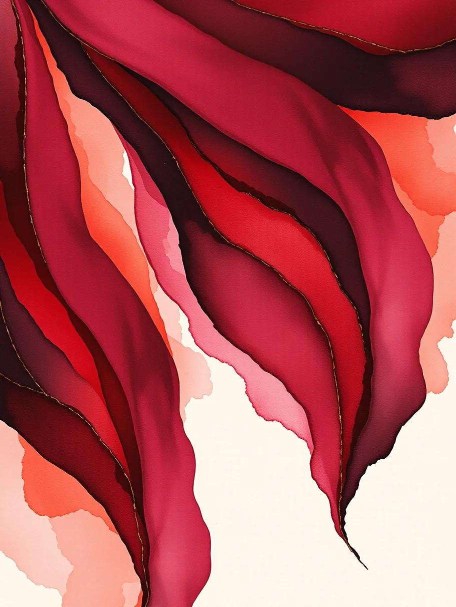
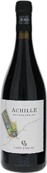

Italy / RED WINE
ACHILLE
Case Corini
2021
Tasting Image

From a deep, strong flavour like Amarone.
- Country
- Italy
- Region
- Piedmont
- Producer
- Case Corini
- Grape
- Barbera / Nebbiolo
Tasting Notes
Deep and strong, like an Amarone wine.
Firm tannins.
Smooth and soft to drink.
25,000
